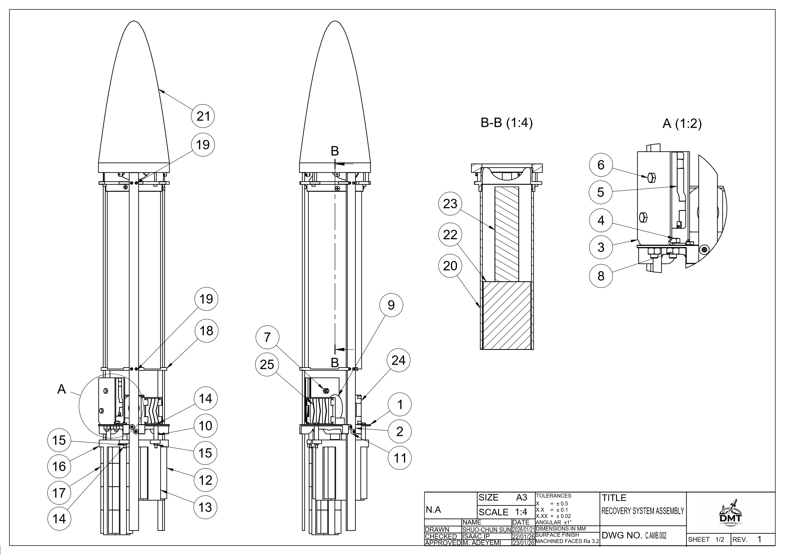
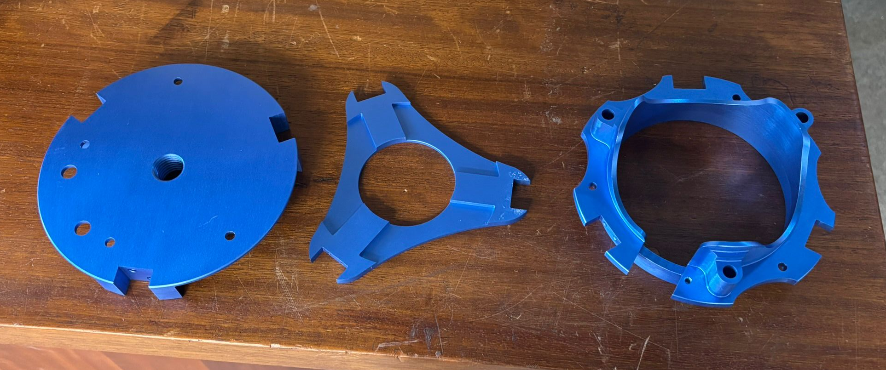
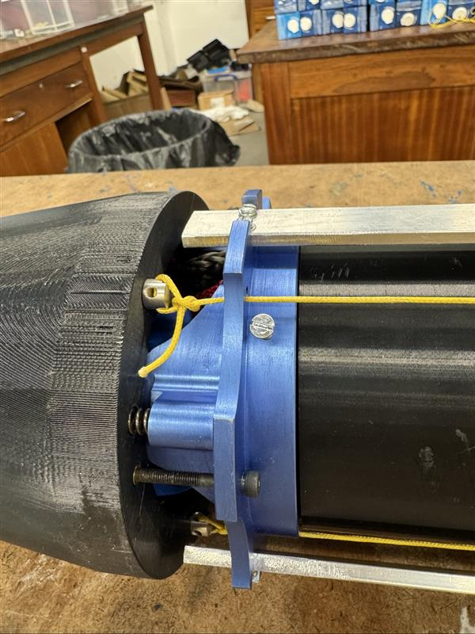
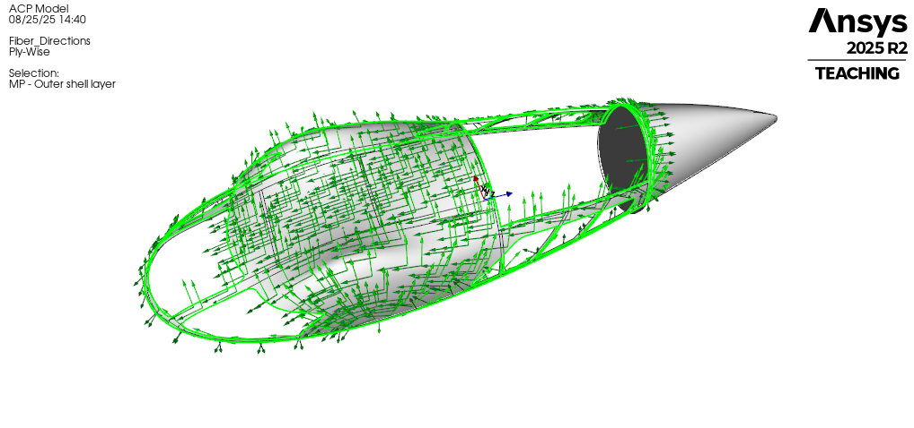
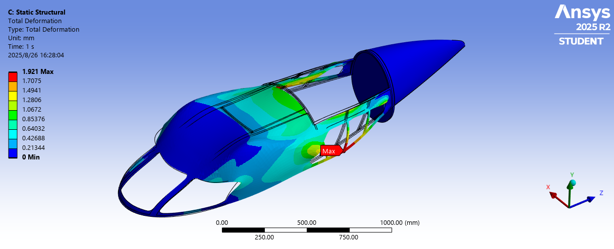

Hardware & Structural Engineering Mini-Portfolio
Shuo-Chun (Stan) Sun
MEng Mechanical Engineering, Imperial College London (75.95% Year 3) · Former Product Design Intern, Google
sjsunjet.github.io
ss10323@ic.ac.uk
linkedin.com/in/shuo-chun-sun-43a850292
ss10323@ic.ac.uk
linkedin.com/in/shuo-chun-sun-43a850292
1. Two-Stage Electromechanical Rocket Recovery Module (Built & Tested Hardware)
-30% Bulkhead Mass
6 kN Shock Load
1883 Hz Resonance Found
8.1 m/s Descent
Designed, CNC-machined, and tested a dual-stage parachute recovery bay for a competition rocket. Owned CAD packaging & BS 8888 assembly drawings, static FEA bulkhead optimization, Arduino burnwire/latch deployment, and vibration test campaign planning + Python telemetry analysis.

CAD & BS 8888 Assembly Drawing (C.AMB.002): Authored master general arrangement, canister cross-section, rotary latch detail, and full 25-item BOM.

Static FEA Shape Optimization: Sized pocketed ribs under 5.7 kN equivalent static deployment shock (SFmin = 1.51), cutting bulkhead mass by 30%.

CNC-Machined Aluminum Plates: Fabricated anodized bulkhead (left), chute former (center), and interface ring (right) directly from pocketed CAD.

Mechanism Build & Qualification: 200 N spring nose cone ejection with Dyneema cord tensioning; verified via nichrome burnwire (4.6 s), wind tunnel, & shaker testing.
2. Carbon-Fibre Monocoque & Top Shell Optimization (Shell Eco-Marathon)
-40% (8 kg) Monocoque Mass
5 → 2 Skin Plies
230 GPa CFRP + PVC Core
Redesigned the CFRP monocoque and composite top shell using a data-driven FEA workflow in ANSYS Mechanical and ANSYS ACP (Pre), cutting monocoque mass by 40% (8 kg) and reducing skin layup from 5 to 2 layers while satisfying deformation and packaging constraints.

ANSYS ACP Laminate & Fibre Alignment: Defined edge-guided 0°/90° rosettes across aerodynamic contours and internal stiffening ribs, enabling layup reduction from 5 to 2 plies.

Static Structural Stiffness Validation: Evaluated qualitative deformation contours on the CFRP/PVC-foam sandwich shell under cockpit door loading to guide targeted local reinforcement.